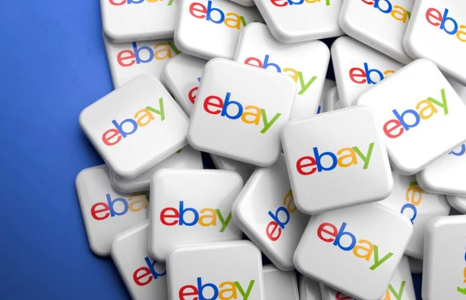
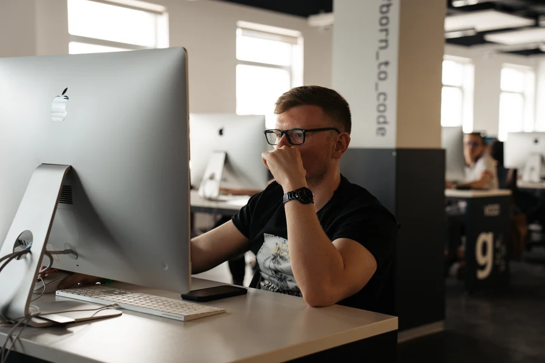
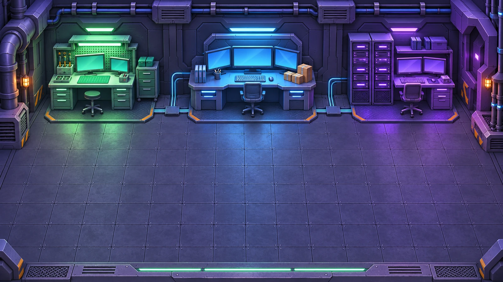
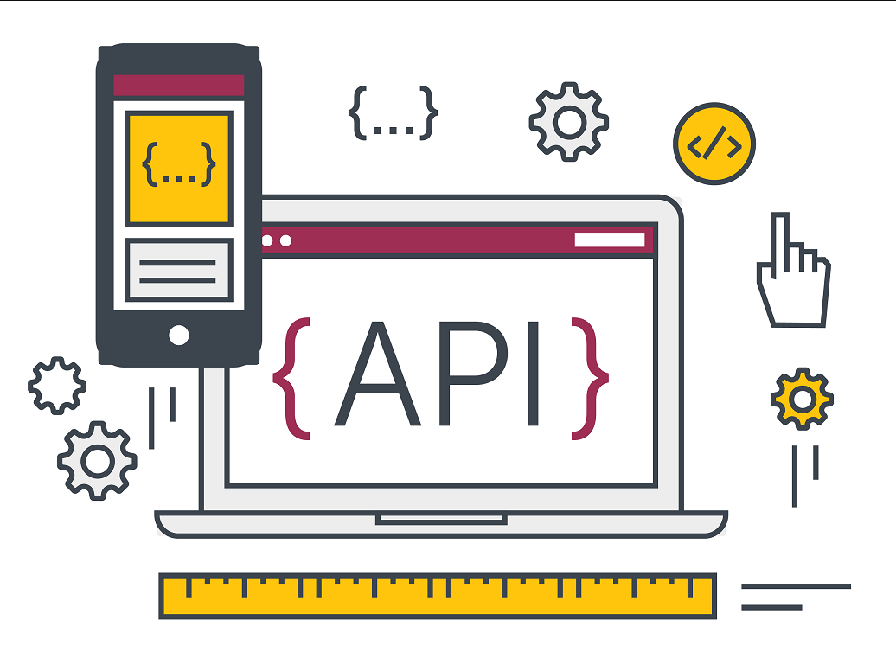

Проект 1
Тестирование eBay
Этот проект представляет собой тестирование основных функций сайта eBay.com.
Пройдите три проверки и откройте мои навыки и проекты по QA.

Евгений МедведевManual QA Engineer
Мое портфолио

Проект 1
Этот проект представляет собой тестирование основных функций сайта eBay.com.

Проект 2
Данный проект содержит документацию и тестовые коллекции, созданные при выполнении заданий на учебной платформе QA Playground.
В настоящее время работаю ручным тестировщиком, занимаюсь комплексным тестированием веб-приложения и Telegram-экосистемы (бота и мини-приложения). В мои обязанности входит весь цикл тестирования: проектирование тест-кейсов, выполнение функционального и регрессионного тестирования, составление баг-репортов. Параллельно с работой я прохожу обучение в «Школе 21», где углубляю свои знания в области QA и осваиваю инструменты автоматизированного тестирования на Java (AQA). Мой путь в IT начался с самостоятельного изучения программирования, которое я успешно дополнил завершенным курсом по тестированию ПО. Предыдущий опыт в HR, где я отвечал за контроль документов и соблюдение нормативов, позволил мне развить внимательность к деталям и системное аналитическое мышление, что является прямой основой для работы в QA.
2012 Балтийский федеральный университет имени Иммануила Канта
Юридический факультет, Юриспруденция (Юрист)
2025 Stepik Тестирование ПО с нуля. Теория + Практика
Сертификат2025 Stepik Selenium на Python
Сертификат2025 Stepik Jira: ведение задач на электронных досках
Сертификат1 марта 2025 г.
Я решил стать QA-специалистом, потому что для меня важно не просто создавать что-то новое, но и гарантировать, что это будет работать безупречно. С самого начала своего пути я осознал, что качество — это не просто этап в процессе разработки, а философия, требующая внимания к деталям, терпения и глубокого понимания как технической, так и пользовательской стороны продукта. Мне нравится быть тем, кто стоит на страже качества, кто выявляет слабые места и помогает сделать продукт лучше. Для меня QA — это не просто поиск багов; это возможность влиять на конечный результат, чтобы пользователи получали то, что действительно работает и приносит им пользу. Я всегда стремлюсь к тому, чтобы каждая деталь была продумана, а каждый сценарий — протестирован. Это мой способ сделать мир технологий немного лучше.